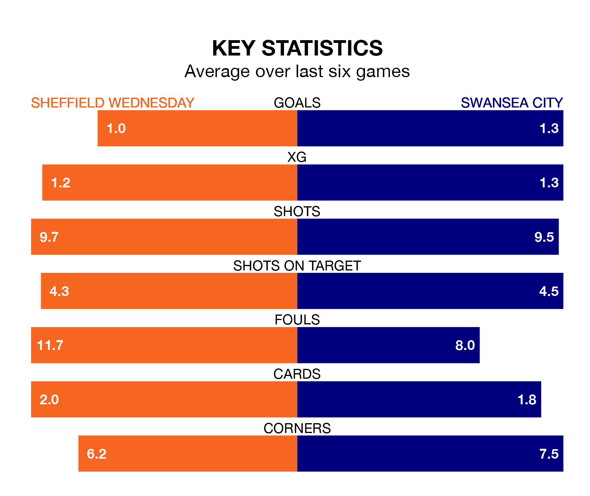

Sheffield Wednesday host Swansea City on Friday at Hillsborough in EFL Championship.
In their last league match, on March 16, Wednesday lost to Ipswich Town 6-0 away.
Swansea won, 2-0 at home against Cardiff City, with Jamal Lowe and Liam Cullen on the scoresheet.
Wednesday are 23rd in the table after 38 games, of which they have won 11 and drawn five, earning 38 points.
Swansea are eight places ahead of the Owls in 15th, with 12 wins and 10 draws putting them on 46 points.
In the last 10 years, Wednesday and Swansea have played each other on nine occasions. Wednesday won one of them, Swansea five, and they drew three times.
On average, the Owls scored 0.9 goals and the Swans 1.7 in those matches.
Their last meeting was on September 23, when Swansea won 3-0 at home.
With 30 goals in 38 games so far this season, the home team are the league's joint-second-lowest scorers with 0.8 goals per game. And they are conceding more than average, letting in 61 goals at a rate of 1.6 per game.
City are also below average scorers, with 1.3 goals per game, compared to a league average of 1.4. They have conceded 1.5 goals per game.
Wednesday are in reasonable form in EFL Championship, with four wins and two losses from their last six games.
With three wins and a draw over that period, the Swans' form is slightly worse – they have taken 10 points from 18, compared to Wednesday's 12.
Updated: 12:16 (UTC), 25/03/24